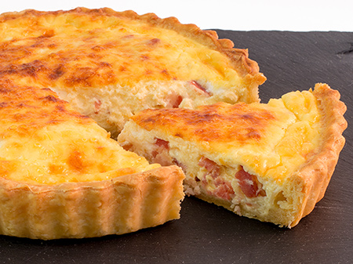

Quiche de bacon y queso
Receta de Quiche casero de bacon queso

Ingredientes Para 4 Personas
- 3 huevos grandes
- 200-220 g de bacon
- 180 ml de nata
- 120 ml de leche
- 180 g de queso gruyere o emmental
- Una pizca de nuez moscada (opcional).
- Pimienta negra molida.
- Aceite de oliva y sal.
- Y mucha paciencia
Para la masa quebrada
- 220 g de harina floja
- 110 g de mantequilla.
- 1 huevo.
- 1 cucharadita de azúcar.
- Molde desmontable de 23 cm